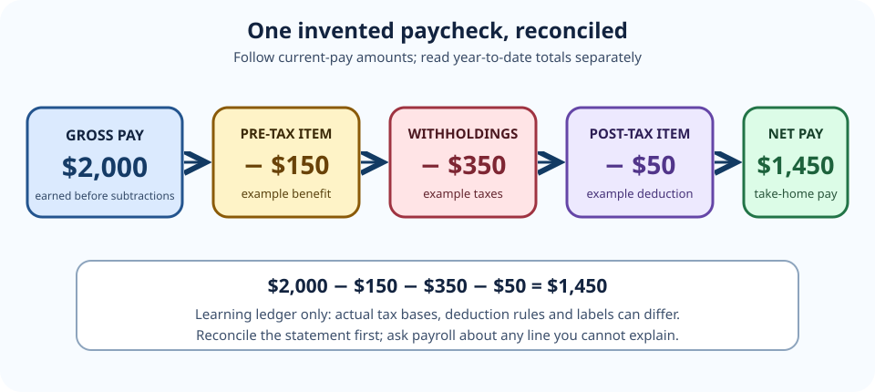

01 · Visual model
Follow current pay from gross to net

Text equivalent: Start with $2,000 gross pay. Subtract a $150 example pre-tax benefit, $350 of example tax withholdings, and a $50 example post-tax item. The remaining $1,450 is net pay. Real tax bases, benefits and labels can differ.
02 · Why it matters
A smaller deposit can still be correct—or contain a question
Gross pay describes earnings before deductions. Net pay, sometimes called take-home pay, is the amount after deductions. The gap can include tax withholdings, insurance or retirement benefits, and other authorized items. Seeing a smaller deposit does not reveal which line caused it.
Reconciliation changes “Where did my money go?” into two checkable questions: does gross pay plus any current additions minus current subtractions equal net pay, and can I explain every current line? The statement’s year-to-date column answers a different question: how much has accumulated so far this year.
03 · Five landmarks
Read the statement in this order
Identity and period
Match the employee, employer, pay-period dates and payment date before comparing amounts.
Earnings
Find salary or hours, rate, overtime, bonus or commission. These lines build current gross pay.
Taxes withheld
Separate federal income tax, Social Security, Medicare, and any state or local lines that appear.
Additions, benefits and other items
Name reimbursements, insurance, retirement or other items. “Pre-tax” does not mean every tax uses the same base.
Net and year-to-date
Reconcile current net pay first. Treat year-to-date values as cumulative totals, not extra current deductions.
04 · Worked example
Rebuild one invented $2,000 paycheck
These values are fictional and demonstrate arithmetic, not recommended deduction levels or tax rates. This statement has no separate additions; include any that appear on a real statement.
| Current-pay line | Amount | What to ask |
|---|---|---|
| Gross pay | $2,000 | Do the salary, hours, rate and extra earnings support this total? |
| Example pre-tax benefit | − $150 | What benefit is it, and does the enrollment amount match? |
| Example tax withholdings | − $350 | Which separate federal, payroll, state or local lines make this total? |
| Example post-tax item | − $50 | What authorized item does the label identify? |
| Net pay | $1,450 | Does this equal the deposit, check or split-deposit total? |
$2,000 − $150 − $350 − $50 = $1,450
05 · Reality check
Four easy reading mistakes
- Subtracting year-to-date twice: cumulative totals are not another deduction from this pay period.
- Treating every subtraction as tax: benefits and other deductions need their own labels.
- Calling the middle subtotal “taxable income”: different taxes and benefits can use different wage bases.
- Assuming withholding settles the final bill: federal withholding is a payment toward tax; the amount owed or refunded is determined later from the full return.
06 · Practice
Review one statement in 20 minutes
- Open the pay-stub review card and one private statement.
- Rebuild current gross pay from the earnings lines.
- Categorize every current addition and subtraction.
- Compute current gross plus additions minus subtractions and compare the result with current net pay.
- Choose one line, compare current with year-to-date, and write one payroll question if needed.
Knowledge check
- What does gross pay describe?
- Why should current and year-to-date columns be read separately?
- What does a balanced equation prove—and not prove?
Reveal answer guidance
- Earnings before deductions and withholdings.
- Current values describe one pay period; year-to-date values accumulate across the year.
- It proves that the listed current amounts reconcile to net pay. It does not prove that each line is correct, authorized, lawful or appropriate for your tax situation.
07 · Next steps
Check vocabulary, then ask one specific question
Use the CFPB’s written paycheck activity to review gross pay, net pay and common federal deductions. Use the IRS tax-withholding guide when the question is specifically about federal income-tax withholding. The source and limitation ledger maps each claim and its boundary.